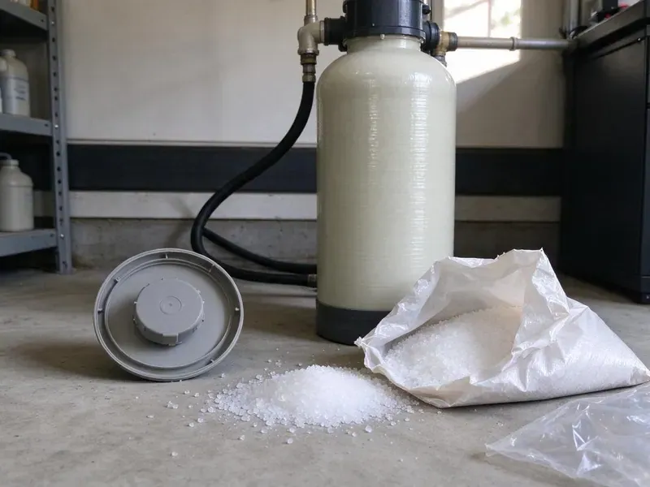

Plumbers Near Me in Lafayette, LA
When you need trusted plumbers near me in Lafayette, LA, Beau's Plumbing is ready to help. We handle all plumbing issues for homes and businesses.
- Fast Local Service
- Licensed & Insured
- Fast, Reliable Service
- Expert Louisiana Plumbers

Licensed Plumbers On Call Today in Lafayette, LA.
Contact us for prompt and professional plumbing solutions suited to your home's needs.
Expert Plumbers Near Me for Lafayette, LA Homeowners
At Beau's Plumbing, we understand the plumbing challenges faced by homes in Lafayette, LA. Our plumbers are well trained to diagnose and fix problems efficiently, so your plumbing system runs reliably.
Our expertise includes:
- Water heater, softener and pressure regulator installation and repair
- Slab Leak Detection & Repair
- Water Heater Repair & Installation

Additional Plumbing Maintenance Services in Lafayette, LA
Our maintenance and specialty plumbing services in Lafayette, LA catch small problems before they become emergencies.


Customers
Why Choose Beau's Plumbing for Plumbers Near Me in Lafayette, LA?
Choosing Beau's Plumbing means partnering with a team that puts first your comfort and safety. We're dedicated to delivering high-quality plumbing services with transparent pricing and attentive customer care.
- Local Expertise, Our plumbers understand the challenges of Lafayette's soil and water conditions, which can impact plumbing systems.
- On-Time Arrival, We give you a real arrival window and call ahead when we are en route.
- Skilled Technicians, Every plumber is licensed, insured, and regularly trained on the newest plumbing technologies and repair methods.
Citywide Coverage
We are committed to providing prompt plumbing services across all of Lafayette, LA. Our local presence means we can reach your home fast for any plumbing need, big or small.
Experienced Team
Our plumbing team is made up of experienced, Louisiana-licensed professionals who have seen and fixed every kind of plumbing issue. They are skilled at diagnosing problems and putting in place durable solutions for homes in Lafayette.
Safety-First Approach
We follow the plumbing code adopted in your city or county and pull permits for water heater, gas and repipe jobs when required. Every repair is tested before we leave.
Trusted Certified Lafayette Plumbing Services Professionals
At Beau's Plumbing, we take pride in providing certified plumbing services throughout Lafayette, LA. Backed by leading industry credentials, our experienced plumbers combine technical skill with genuine customer care. Whether it is repair, installation, or maintenance, we follow strict safety and quality standards to deliver lasting results you can trust.
Call Us Now PHCC Plumbing Contractor Recognition
PHCC Plumbing Contractor Recognition Better Business Bureau (BBB) Accreditation
Better Business Bureau (BBB) Accreditation Angi Certified Pro
Angi Certified Pro ISO 9001 Quality Management Certification
ISO 9001 Quality Management CertificationDependable Plumbers Near Me Services in Lafayette, LA
Toilet, Faucet and Fixture Repair in Lafayette, LA
Running toilets, dripping faucets and leaky shower valves waste water and drive up your bill. We replace flappers, fill valves, cartridges and wax rings, or install new fixtures when repairs no longer make sense. Mineral buildup from hard water often wears out cartridges faster, so we carry common replacements. We can also install water-efficient fixtures that meet today's standards.

Commercial Plumbing Service in Lafayette, LA
Restaurants, offices, salons and retail spaces need plumbing that works every day. We handle commercial water heaters, grease traps, backflow testing, restroom fixtures and drain lines. Preventive maintenance plans reduce downtime and surprise repairs. We can schedule work before or after business hours to suit you.
Water Softener and Filtration Service in Lafayette
Municipal water in Louisiana comes from rivers and aquifers, and it ranges from soft to moderately hard depending on the source. Hard water leaves scale on fixtures, inside water heaters and in pipes. We install and service water softeners, reverse osmosis drinking water systems and whole-house filters. Proper installation includes a bypass valve, drain connection and correct salt settings. Treated water helps your plumbing and appliances last longer.
Pipe Repair & Repiping in Lafayette
Aging pipes, especially galvanized or polybutylene, can lead to frequent leaks and low water pressure. We offer full pipe repair services, from patching small leaks to full-scale repiping with durable PEX or copper. Our goal is to provide long-lasting plumbing that stands up to Lafayette's water conditions.
Gas Line Repair and Installation in Lafayette
We repair and install gas lines for water heaters, ranges, dryers, fireplaces and outdoor kitchens. All gas work is pressure tested, and we pull permits when the local code requires them. If you smell gas, leave the home and call your gas utility first, then call us for the repair. We use approved materials such as black iron and CSST with proper bonding.
Water Heater Repair & Installation in Lafayette, LA
From traditional tank heaters to modern tankless systems, our plumbers specialize in water heater repair and installation. We diagnose issues like no hot water, strange noises, or leaks, and recommend the most energy-efficient solutions for your Lafayette home. We work with trusted brands like Rheem, AO Smith, and Bradford White, for reliable hot water for your family.
Sewer Line Repair & Replacement in Lafayette, LA
Sewer line problems can be messy and disruptive. Homes are commonly built on slabs or raised pier foundations, and raised homes keep much of the plumbing easier to reach. Shifting ground can put stress on older sewer pipes, leading to cracks or collapses. Our team offers complete sewer line solutions, including trenchless repair options like pipe bursting and relining, which minimize yard disruption. We also perform traditional excavation when necessary, addressing issues like root intrusion, pipe corrosion, and blockages to restore proper drainage for your Lafayette, LA property.

Emergency Plumbing in Lafayette
Plumbing emergencies don't wait for business hours. Whether it's a burst pipe, a major sewer backup, or a sudden water heater failure, our emergency plumbers in Lafayette are available to provide rapid response and effective solutions. We understand the urgency of these situations and arrive equipped to diagnose and contain the problem quickly, minimizing damage and restoring peace of mind to your home or business.
Your Local Plumbers Near Me in Every Lafayette, LA Neighborhood
When you search for 'plumbers near me' in Lafayette, LA, you're looking for local know-how and fast service. Our team is familiar with the plumbing infrastructure across the entire Lafayette area. This local focus allows us to provide faster response times and more tailored solutions for the common plumbing issues found in Louisiana homes.
Local plumbers also understand the permit process, inspection requirements and water conditions in your community. We keep the parts that local homes need most on our trucks. That helps us finish the job in one visit.
Beau's Plumbing at a Glance
- Fully licensed plumbing team covering Lafayette, LA
- 24/7 emergency service with same-day scheduling
- Upfront, flat-rate pricing before work begins
- 4.8-star rated by 578+ Louisiana customers
Lafayette Map
Lafayette Information
- Population
- 121,467
- Area codes
- 337/225/318
- Service area
- Lafayette and communities within 40 miles
- Nearby
- Baton Rouge, Prairieville, Lake Charles, Alexandria
Humid air causes sweating pipes and toilet tanks, and that moisture can damage subfloors and framing if leaks go unnoticed. Water quality and slab foundations can also put real strain on plumbing in Lafayette, LA, so having a trusted local plumber on call protects your home.
Expert Services
Trust our professionals for reliable Beau's Plumbing solutions in Lafayette, LA.
Our Specialized Plumbing Services in Lafayette, LA
At Beau's Plumbing, we provide a complete range of plumbing services across Lafayette, LA. From leak detection to full system installations, our team ensures fast, precise, and affordable service for both residential and commercial properties. Explore our core services below:


How Our Plumbers Near Me Service Works in Lafayette, LA
We make plumbing service simple from your first call to the completion of the job.
Request a Quote
Call us at (504) 317-6869 or fill out our online form to schedule an appointment. We'll gather basic information about your plumbing issue and set up a suitable time for a technician to visit your Lafayette home.
On-Site Diagnosis
A licensed plumber will arrive at your home, conduct a thorough inspection, and accurately diagnose the problem. They will explain their findings clearly and discuss all available repair or replacement options.
Upfront Pricing
Before any work begins, you'll receive a detailed, transparent quote outlining the cost of the service. We believe in no surprises, so you'll know the exact price for the plumbing work in Lafayette.
Frequently Asked Questions About Plumbers Near Me in Lafayette
Plumbing costs in Lafayette can vary widely depending on the type and complexity of the service. A basic service call or minor repair, like a faucet drip, might range from $150-$300. More involved jobs, such as water heater replacement or slab leak repair, can range from $800 to several thousand dollars. We provide upfront, transparent pricing after diagnosing the issue.
Signs of a slab leak in your Lafayette home include unexplained high water bills, warm spots on your floor, the sound of running water when all fixtures are off, visible cracks in the foundation, or mildew odors. If you suspect a slab leak, it's crucial to call a professional for immediate detection and repair to prevent structural damage.
We recommend having a professional plumbing inspection every 1 to 2 years, especially for older homes in Lafayette. Regular inspections can help identify minor issues before they become major problems, extend the lifespan of your plumbing system, and keep everything running efficiently. This proactive approach can save you money and prevent emergencies down the line.
For plumbing emergencies in Lafayette, we prioritize rapid response. We aim to have a licensed plumber at your location as quickly as possible, often within a few hours, to address urgent issues like burst pipes or severe leaks. Call us directly for immediate assistance.
Yes. We serve restaurants, offices, retail stores and multifamily buildings. Services include backflow testing, grease traps, commercial water heaters and restroom fixtures.
Hard water contains high levels of dissolved minerals like calcium and magnesium. Soft water has these minerals removed. Municipal water in Louisiana comes from rivers and aquifers, and it ranges from fairly soft to moderately hard depending on the source. Hard water can lead to mineral buildup in pipes and appliances, reduced soap lather, and dry skin. We can test your water in Lafayette and recommend softening solutions.
While minor clogs or drips might be DIY-friendly, most plumbing issues are best handled by professionals. Attempting complex repairs without the right tools or expertise can lead to more significant damage, costly mistakes, or even safety hazards, especially with gas lines or structural plumbing. Professional plumbers have the training, tools, and experience to diagnose and fix problems correctly and safely.
While minor tasks like plunging a toilet or replacing a showerhead can be DIY, most plumbing repairs are best handled by licensed professionals. Incorrect repairs can lead to more significant damage, costly leaks, and code violations. For anything beyond a simple fix, it's wise to call an experienced plumber in Lafayette so the job is done correctly and safely.
What People Are Saying About Our Plumbing Experts?

Robert G.
The trenchless sewer replacement saved our front yard. They walked us through the camera inspection footage first so we knew exactly what we were paying for.
Sewer Line Replacement · Prairieville, LA
Daniel K.
A pipe burst at 11 pm and they actually answered. The plumber showed up within the hour, shut everything down, and had us back to normal the next morning. Could not ask for more.
Emergency Plumbing · Houma, LA
Patricia H.
We had a slab leak that two other companies could not find. Beau's Plumbing located it in under an hour, explained our options, and the price matched the quote to the dollar.
Slab Leak Repair · Lafayette, LAJames P.
Our commercial plumbing system had a leak under the sink, and Beau's Plumbing handled it professionally. The plumbers arrived quickly and restored everything without disruption to our customers.
Commercial Plumbing · Hammond, LA
Mark T.
When our office needed drain cleaning, Beau's Plumbing provided quick, reliable service. The plumber arrived on time and made sure every drain flowed perfectly before leaving. Very satisfied.
Drain Cleaning · Alexandria, LA
Laura S.
I scheduled a water heater replacement, and the team made the process smooth and affordable. The new unit works perfectly, and they cleaned up after completing the job.
Water Heater Replacement · Lafayette, LA